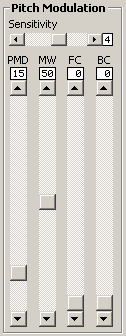

Pitch Modulation Controls

The pitch modulation controls determine how much the LFO changes the overall
pitch of the sound.
Sensitivity
This is a factor that affects the overall depth of pitch modulation. It's
kind of like a multiplier that increases the effects of the other four controls.
PMD
This determines the base depth of the pitch modulation. If this is increased,
the sound will always have pitch modulation, regardless of the mod wheel, foot
controller, and breath controller.
MW, FC, BC
These settings determine the range of the increase in amplitude modulation by
the mod wheel, foot controller, and breath controller respectively. The
increase is added to the value of the AMD setting, so for example, if the AMD
is set to 50 and the MW is set to 50, and you turn up the mod wheel halfway,
the resulting depth will be 75.
The BC setting can also affect aftertouch if the unit is set up to use it.
See the AT -> BC setting in the section
on system setup.